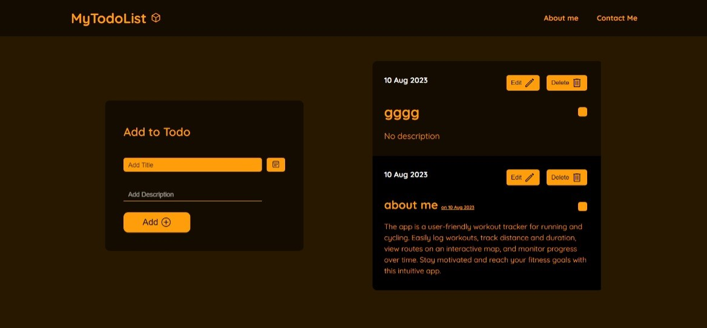
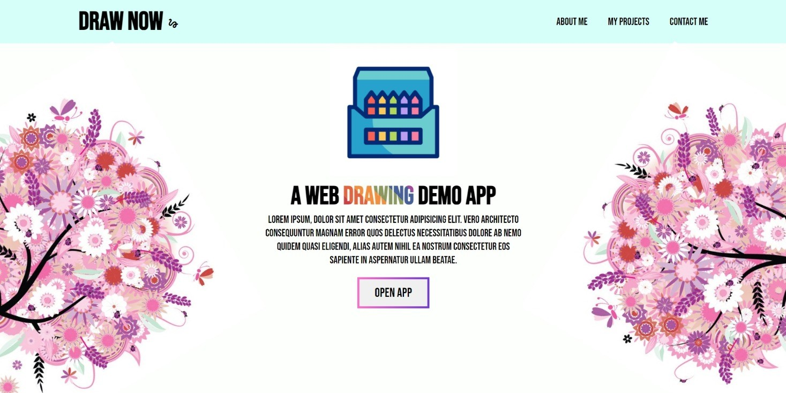
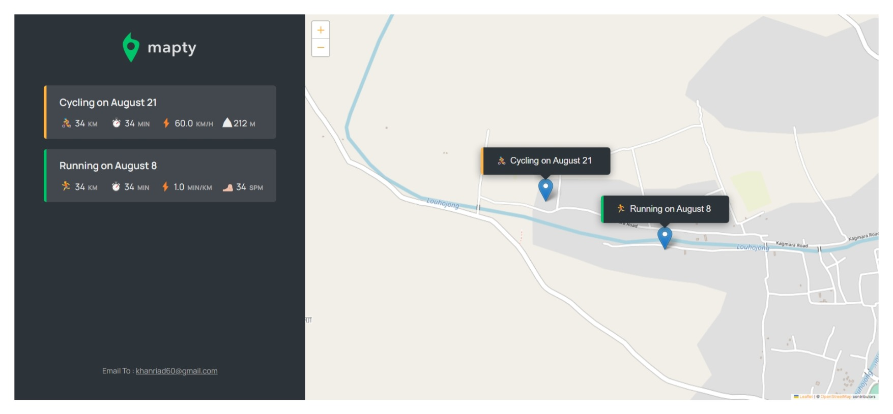
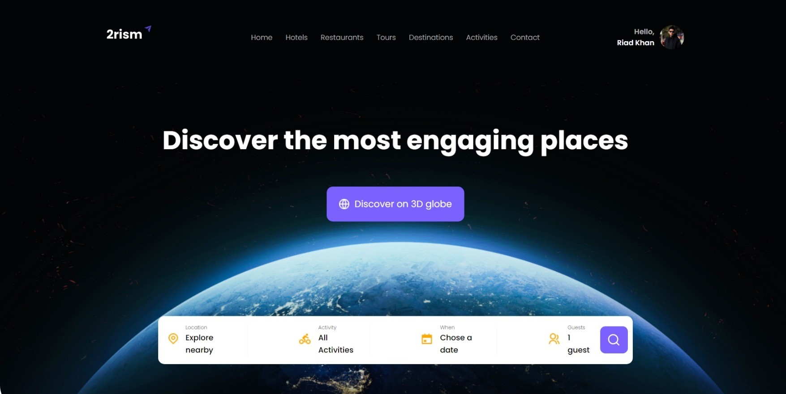

Hi, here are all my projects
Four things I built for the web, floating in a small glass world. Scroll to drift through it.
See the projectsProjects
-

Todo App
A dated to-do list. Add a title and a note, then edit, tick off, or delete each entry.
-

Drawing App
Draw Now, a browser drawing demo. A bright floral landing page opens straight into the canvas.
-

Mapty App
Logs running and cycling workouts on a live map, with distance, time, and pace for every session.
-

2rism
A travel discovery site with a 3D globe and a search bar for places, activities, dates, and guests.